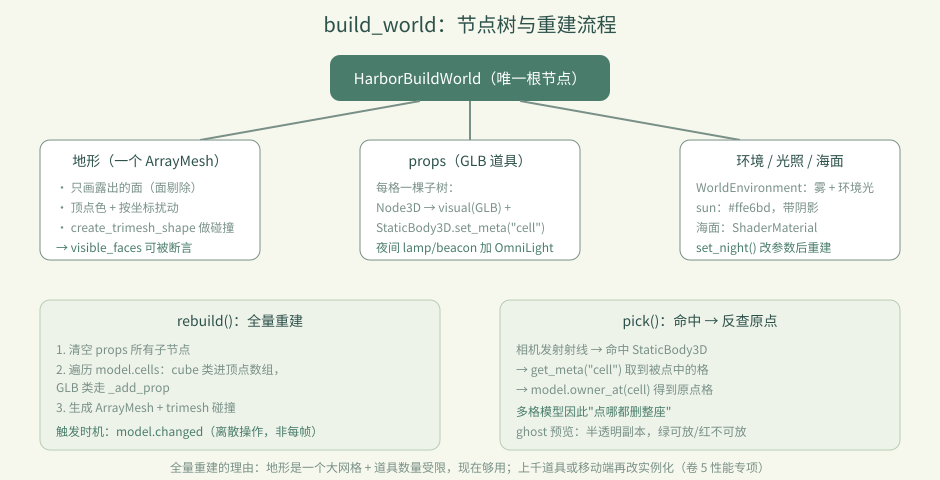
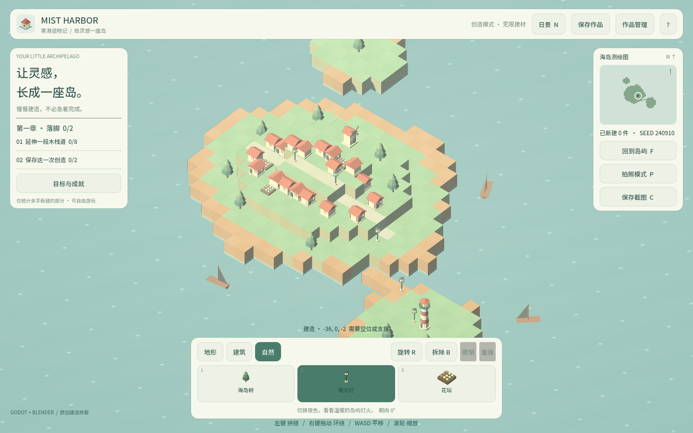
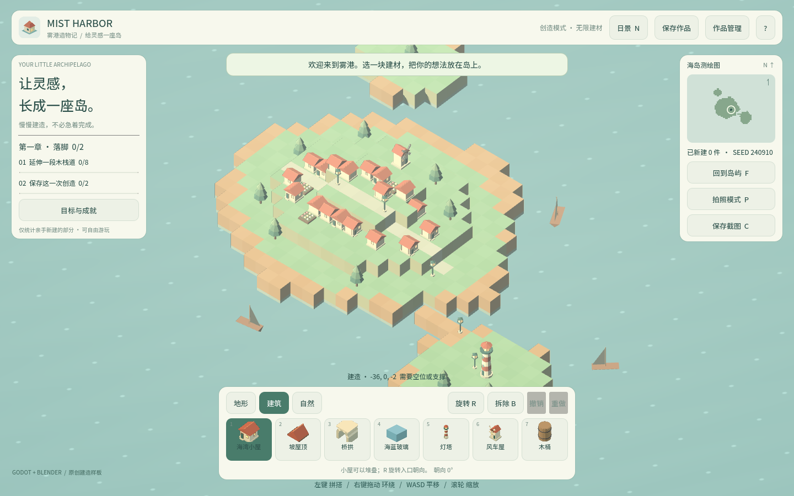
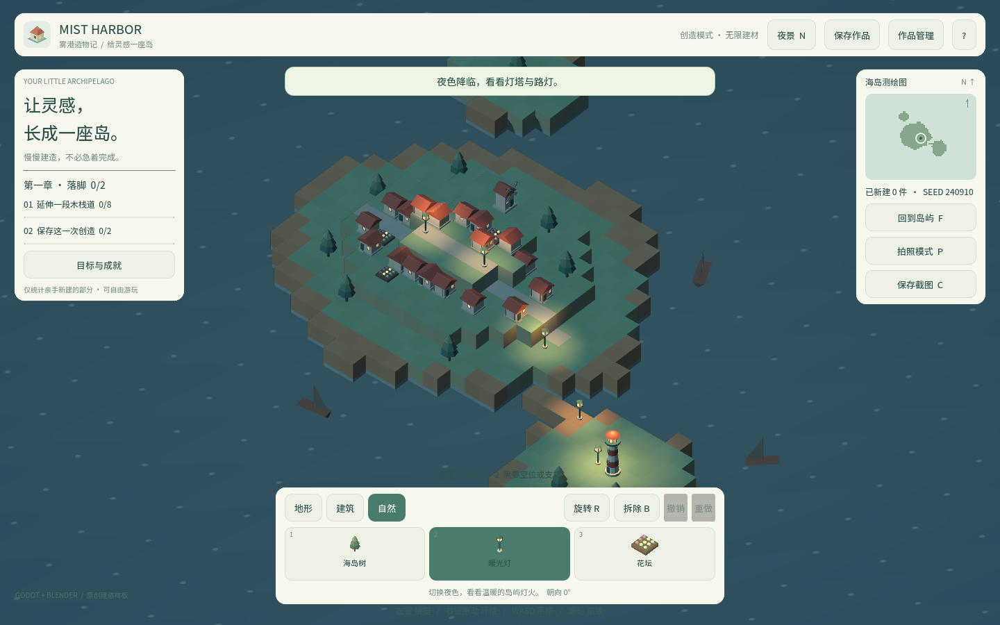

卷 2 · 第 10 章 build_world：一格数据怎么变成一座岛
本章目标：读通
build_world.gd——地形网格怎么生成（为什么只画露出的面）、
道具（GLB）怎么摆、点击怎么命中、昼夜怎么切换。
对应任务：T16 / T39 | 对应文件：project/scripts/build_world.gd
10.1 节点树：一堆 Node 拼出来的舞台
HarborBuildWorld (Node3D)
├─ WorldEnvironment 环境：雾、背景色、环境光
├─ DirectionalLight3D sun：暖阳 #ffe6bd，带阴影
├─ MeshInstance3D terrain：地形网格（动态生成）
│ └─ StaticBody3D 地面碰撞（trimesh）
├─ Node3D props：所有 GLB 道具
├─ Node3D ghost：放置预览（半透明）
└─ 海面 MeshInstance3D sea_material（ShaderMaterial）注意：这些节点全部是代码 new() 出来的，main.tscn 里只有一个根节点。
好处是"世界状态"和"场景结构"完全由数据驱动；代价是必须理解 rebuild()。

10.2 地形：只画"露出来的面"
for face in FACES:
var neighbor = model.get_cell(cell + face.offset)
if not neighbor.is_empty() and neighbor 的 mesh == "cube":
continue # 被同类方块挡住 → 这一面不画
visible_faces += 1
...| 关键点 | 说明 |
|---|---|
| --- | --- |
| 面剔除 | 相邻格也是 cube 类，这一面不可见 → 跳过。省掉大量三角形 |
visible_faces | 实际渲染的面数，测试会断言它 > 0（证明地形真的生成了） |
| 顶点色 | color 写进顶点，材质 vertex_color_use_as_albedo = true |
| 颜色扰动 | 按坐标 hash 出 ±0.07 的亮度变化，避免大片死板同色 |
| 特殊着色 | 草的侧面、水下的石头有专门颜色，让地形有层次 |
📌 这是典型的"数据 → 顶点数组 → ArrayMesh"流程：
PackedVector3Array+PackedColorArray→add_surface_from_arrays→ArrayMesh。
10.3 碰撞：从同一个网格生成
var shape := mesh.create_trimesh_shape()
shape.backface_collision = true
ground_collision.shape = shape一份网格，两种用途（渲染 + 拾取）。backface_collision = true 是为了从内侧也能命中，
避免相机穿到地形下方时拾取失效。
10.4 道具（GLB）：一个格子一棵子树
func _add_prop(cell, item) -> void:
var root := Node3D.new()
root.position = Vector3(cell) + Vector3(0.5, 0, 0.5) # 格子中心
var visual := _visual(kind) # 实例化 GLB 场景
visual.rotation.y = item.rot * PI / 2.0 # 朝向
var body := StaticBody3D.new()
body.set_meta("cell", cell) # ← 拾取靠它set_meta("cell", cell) 是这一章最关键的细节：
射线命中的是 StaticBody3D，但它需要告诉调用方"你点到了哪个格子"——
于是把坐标存在 meta 里。这样拾取逻辑和渲染逻辑彻底解耦。
10.5 拾取：射线 → meta → 原点格
func pick(camera, screen_position) -> Dictionary:
# 从相机发射射线，命中 body
# 读 body.get_meta("cell")
# 用 model.owner_at(cell) 反查原点格（多格模型的关键！）返回给 main.gd 的是原点格（不是被点到的那一格）——这就是第 06 章
"点灯塔上半截会删掉整座"的实现落点。
10.6 预览与昼夜
| 机制 | 实现 |
|---|---|
| --- | --- |
| ghost 预览 | show_ghost() 实例化一个半透明副本，绿=可放、红=不可放，跟随鼠标 |
| 昼夜 | set_night() 改 environment 的背景/环境光/雾色、sun 的颜色与强度、海面 shader 参数；再 needs_rebuild = true |
| 夜间灯光 | lamp / beacon 在夜间额外挂 OmniLight3D（暖橙 #ffbd70） |
10.7 性能：为什么"全量重建"现在够用
rebuild() 每次都清空 props 重建整棵树，听起来很浪费，但在本实训的规模下：
- 地形是一个 ArrayMesh（不是每格一个 MeshInstance）→ Draw Call 极少
- 道具数量受
MAX_CELLS=12000限制，且多数是低模 - 重建只在
model.changed后触发（离散操作，不是每帧）
什么时候要改：道具数量上千、或要支持移动端低端机时，就该考虑
实例化（MultiMesh / 分块） 与 增量重建。这属于卷 5 的性能专项。
🌩 在云端 agent（web-cb）里是什么样
| 🖥 本地路线 | 🌩 云端 agent（web-cb） | |
|---|---|---|
| --- | --- | --- |
| 渲染后端 | 本地 GPU（本实训见过 GT 630 这类老卡） | 云端预览是 WebGL 2（GL Compatibility），更接近最终 Web 成品 |
| 调试手段 | dev.py run 直接看 | 平台预览 + dev.py test 的 visible_faces 断言（不依赖画面） |
| 性能基线 | 本机测 | 建议以云端/WebGL 为准，因为那是学员真实环境 |
| 排错 | get_debug_output（本地 Godot MCP） | 平台日志；逻辑层用断言先排除 |
🌩 云端没有"本机显卡太老"这个借口：如果在 WebGL 下卡，那就是真的卡。
10.8 常见坑速查（本章）
| 现象 | 原因 | 处理 |
|---|---|---|
| --- | --- | --- |
| 地形没出现 | 只有 GLB 类建材，没有 cube 类 | 断言 visible_faces > 0 会红 |
| 点击位置偏移 | 格子中心忘了 +0.5 | 检查 _add_prop 的 position |
| 点上半截只删上半截 | 拾取没走 owner_at | 必须返回原点格 |
| 夜间没光 | 只有 lamp/beacon 挂 OmniLight | 按设计如此 |
| 大世界卡顿 | 全量重建 + 逐件 MeshInstance | 卷 5 性能专项 |
10.9 本章作业
- 说出
rebuild()里"跳过某一面"的条件，以及这带来多少性能收益（估算：一个 3×3×3 实心方块群有多少面被剔掉？） - 找
set_meta("cell", …)与owner_at()的调用点，写出"点灯塔上半截 → 整座消失"的完整调用链 - 把
_material()的vertex_color_use_as_albedo关掉，观察地形变成什么样（然后改回） - 回答：为什么地形用一个 ArrayMesh 而不是每格一个 MeshInstance？
🎓 教学提示（给教师 / 直播主）
- 概念锚点：渲染是数据的投影。世界状态一变，整棵树重建——简单、可预测、不会不一致。
- 课堂演示：把
visible_faces打印出来，放几个方块看数字变化，讲面剔除的意义。 - 高频误解：学生以为"每格是一个 MeshInstance"。强调地形是合并后的一个大网格。
- 进阶讨论：全量重建 vs 增量更新——什么时候该换？（引出性能专项）
- 批改要点：作业 2 的调用链必须包含
owner_at。
🖼 本章图集



📹 录屏分镜（10 分钟）
| 时间 | 画面 | 解说词要点 |
|---|---|---|
| --- | --- | --- |
| 00:00–01:30 | 节点树图 + main.tscn 只有一个根节点 | "舞台是代码搭的。" |
| 01:30–03:30 | 面剔除代码 + visible_faces 数字变化 | "看不见的面，一个都不画。" |
| 03:30–05:00 | 道具树 + meta("cell") | "命中只是开始，反查原点才是关键。" |
| 05:00–06:30 | 拾取链路（点灯塔上半截） | "数据结构的副产品，再一次。" |
| 06:30–08:00 | 昼夜切换 + 夜间灯光 | "状态切换，整树重建。" |
| 08:00–09:20 | 性能：为什么现在够用 / 什么时候要改 | |
| 09:20–10:00 | 作业 + 预告（main.gd） |
🎬 视频位（待录制）
把录好的视频放到course/media/video/10/（mp4 / webm / mov），重新执行 python tools/course_build.py 即会自动内嵌；首帧默认用本章第一张截图作为封面。分镜脚本见上一节。🖼 配图清单
| 文件名 | 内容 | 生成方式 |
|---|---|---|
| --- | --- | --- |
10-island.png | 岛屿全貌（地形 + 道具） | python tools/course_capture.py --chapter 10 |
10-ghost-lamp.png | 选中暖光灯后的放置预览 | 同上 |
10-night.png | 夜景（灯光与海面变化） | 同上 |
🎥 直播脚本（L3 片段，15 分钟）
- 挑战开场："我在 build_world 里埋了个 bug：点灯塔上半截只删上半截"——让大家找
- 演示：修好（补
owner_at），讲"命中格 vs 原点格" - 互动：报出各自机器上
visible_faces数量 - 收尾：预告性能专项
❓ 本章 FAQ
Q：为什么要全量重建，不增量更新？
A：现在规模下全量重建最简单、最不容易出现"状态不一致"；等真的成为瓶颈再优化（卷 5）。
Q：ghost 预览会不会影响性能？
A：它只有一个节点，跟随鼠标移动，不参与碰撞（MOUSE_FILTER_IGNORE / 非 StaticBody）。
Q：海面是网格还是 shader？
A：一个 MeshInstance + ShaderMaterial，昼夜时改 shader 参数（深/浅水色）。